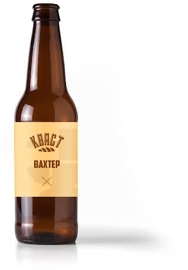
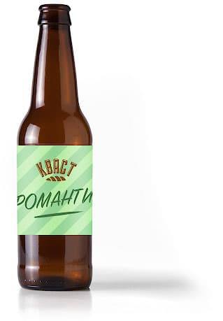

Новинки
Вахтёр
Алк. < 1% Ккал 35 Ржаной хлеб, Вода, Солод, Соль
Терпкий и мощный, вкус этого кваса взбодрит после тяжёлого дня и придаст сил для вечерних приключений!
150 Р.
Романтик
Алк. < 0,5% Ккал 27 Ячменный хлеб, Вода, Солод, Апельсин
Лёгкий и освежающий напиток поможет сохранять отличное настроение в течение всего дня.
90 Р.
Наши преимущества
Варим сами
Вот этими самыми руками. Экспериментируем и творим, что хотим.
Своё, родное
Не заработка ради, а импортозамещения для. Поднимаем производство.
Не экономим
Человек это то, что он ест и пьёт. У нас только качественные ингредиенты.
Немного истории
Происхождение кваса
Квас на Руси появился в X-XI веке. Само слово «квас» тоже имеет древнерусское происхождение. Помимо России квас готовят в Белоруссии, Сербии, Македонии, Словакии и многих других странах, но называется он везде одинаково — квас.
Источник: ru.wikipedia.org

Классификация кваса
По российскому ГОСТу для промышленного изготовления — это напиток с объёмной долей этилового спирта не более 1,2%, изготовленный в результате незавершённого спиртового и молочнокислого брожения сусла.
Источник: ru.wikipedia.org

Пресса о нас
Да, да, вы не ослышались! Спасибо Арсену и Руслану за то, что предоставили целую бочку
своего напитка!
Ассортимент
| Название | Алк. | Ккал | Объём | Стоимость |
|---|---|---|---|---|
| Классика | < 1,2% | 33 | 330 мл | 120 р. |
| Шабаш | > 1,2% | 45 | 330 мл | 250 р. |
| ВахтёрНовинка | < 1% | 35 | 0,5 л | 150 р. |
| РомантикНовинка | < 0,5% | 27 | 0,5 л | 90 р. |
Заказать
Не ждите пока нас отрекламируют, как Вятский квас, и мы поднимем цены! Закажите настоящий крафтовый квас сейчас. При заказе от 10 баррелей — скидка 10%.